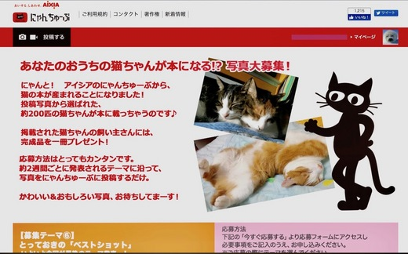
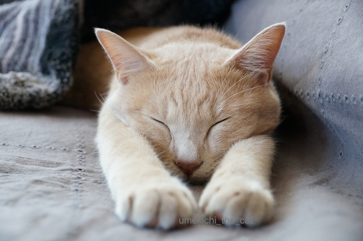
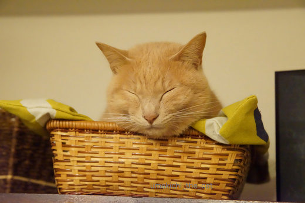
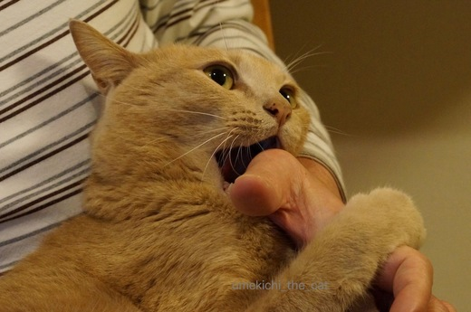
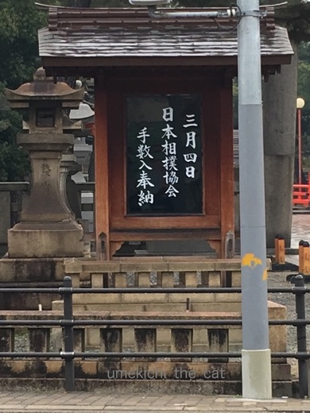
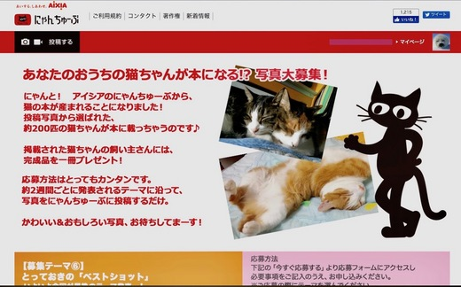
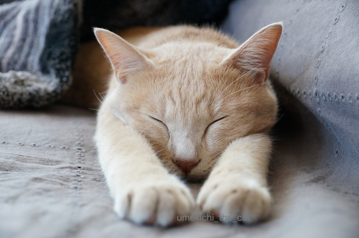
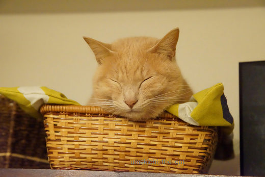
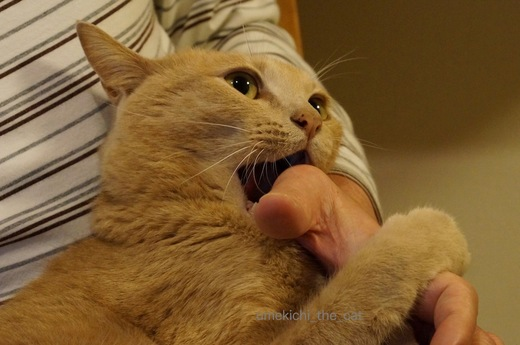
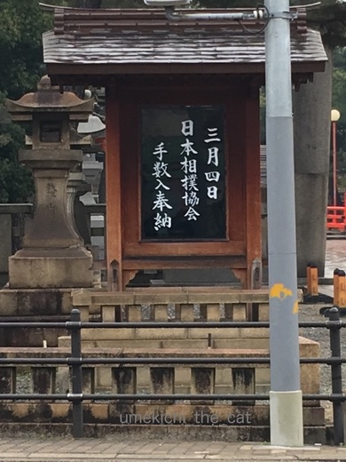

Beginner's luck [梅吉]
ブログ猫友さんに教えていただいてAixia「にゃんちゅーぶ」の猫写真大募集！に
梅吉の写真を初めて応募してみました。
そうしたら、なんと昨日「梅吉くんの写真の書籍掲載が決まりました。」との連絡が。

こんな募集要項でした。
約200にゃんの中に梅吉も仲間入り！どんな本になるんだろう。
４枚ほど応募したのですが採用された写真はこれ。

ふふふ。。。やんちゃ・ガブリエルー梅吉の影を消して可愛い路線で迫ってみました。
出来上がった本を一冊送ってもらえるようなので今から到着が楽しみです。
舞い上がるおとーさん、おかーさんをよそ目に梅吉さんは難しい顔で瞑想中。

梅吉さんはうれしくないんですか？本に載るんですよ。
おかーさん色々応募して見たくなっちゃった。
![[猫]](https://blog.ss-blog.jp/_images_e/101.gif) まぐれやないの。びぎなーずらっく、ちゅうやつやできっと。
まぐれやないの。びぎなーずらっく、ちゅうやつやできっと。
ちょうしにのったらあかん。
はい・・・・ｽﾐﾏｾﾝ・・・
まあ、写真を応募しようにも採用されそうな可愛い写真があまりない梅吉。
変顔とか暴れん坊ぶりが良くわかる写真ならたくさんあるんですが・・・・

がぶ〜っ![[むかっ（怒り）]](https://blog.ss-blog.jp/_images_e/152.gif)
普段はこんな感じですから (≧m≦）
本が届いたらブログ記事にしますね〜。
 ↑ガブッと一押し↑
↑ガブッと一押し↑
近所の神社の掲示。

この掲示を見て「ああ、そうなんだ！」と解る人って相撲通？
もちろん私はわからないのでググってみましたよ。
「手数入り（でずいり）＝横綱の土俵入りの称」だそうです。
この表掲示が例年どうしていたのかはわからないのですが
過去には「何月何日 横綱奉納土俵入り！」と境内に掲示があったり
最寄を走る電車内に広告があったりしたのですが今年は告知がやけにひっそり・・・・
神社のHPにも「神事があります」としかありません。
日本人横綱（あえてそう言いたい）稀勢の里の奉納土俵入りを見ようと
わんさと人が集まってくるのを避けるためなのかな。
夫婦で風邪をひいていることだし（おかげさまで回復傾向です！）
今回の奉納土俵入りは見に行かないことに。
が、大阪場所は十四日目を見にいきます。
去年初めてお相撲を見に行ったのですが、お相撲、生で見るととっても面白いんですよ。
それも後日記事にしますね〜。
梅吉の写真を初めて応募してみました。
そうしたら、なんと昨日「梅吉くんの写真の書籍掲載が決まりました。」との連絡が。

こんな募集要項でした。
約200にゃんの中に梅吉も仲間入り！どんな本になるんだろう。
４枚ほど応募したのですが採用された写真はこれ。

ふふふ。。。やんちゃ・ガブリエルー梅吉の影を消して可愛い路線で迫ってみました。
出来上がった本を一冊送ってもらえるようなので今から到着が楽しみです。
舞い上がるおとーさん、おかーさんをよそ目に梅吉さんは難しい顔で瞑想中。

梅吉さんはうれしくないんですか？本に載るんですよ。
おかーさん色々応募して見たくなっちゃった。
ちょうしにのったらあかん。
はい・・・・ｽﾐﾏｾﾝ・・・
まあ、写真を応募しようにも採用されそうな可愛い写真があまりない梅吉。
変顔とか暴れん坊ぶりが良くわかる写真ならたくさんあるんですが・・・・

普段はこんな感じですから (≧m≦）
本が届いたらブログ記事にしますね〜。
近所の神社の掲示。

この掲示を見て「ああ、そうなんだ！」と解る人って相撲通？
もちろん私はわからないのでググってみましたよ。
「手数入り（でずいり）＝横綱の土俵入りの称」だそうです。
この表掲示が例年どうしていたのかはわからないのですが
過去には「何月何日 横綱奉納土俵入り！」と境内に掲示があったり
最寄を走る電車内に広告があったりしたのですが今年は告知がやけにひっそり・・・・
神社のHPにも「神事があります」としかありません。
日本人横綱（あえてそう言いたい）稀勢の里の奉納土俵入りを見ようと
わんさと人が集まってくるのを避けるためなのかな。
夫婦で風邪をひいていることだし（おかげさまで回復傾向です！）
今回の奉納土俵入りは見に行かないことに。
が、大阪場所は十四日目を見にいきます。
去年初めてお相撲を見に行ったのですが、お相撲、生で見るととっても面白いんですよ。
それも後日記事にしますね〜。

カフェオレ色の梅吉

梅吉 2023年8月10日 永眠


梅吉と出会った譲渡会

犬猫の理由なき殺処分ゼロ
妄想広告
UMEKICHI 光

爆発的に早い！
時々攻撃的！
Thanks to Mr.Boss365
爆発的に早い！
時々攻撃的！
Thanks to Mr.Boss365

採用されたお写真とーってもカワユイです!
プロ並みの腕前ですね。
いえいえ普段の梅吉さんももちろん可愛いですよ~。
でも本になるなんて羨ましー。
by zombiekong (2017-03-03 17:37)
ガブリエルを封印した梅吉君…とってもキュートですね！
私的には1枚と言わず、全ページ梅吉君でいいんですけど。だったら買うのに(買わへんのかーい
キュート梅吉君もいいけど、やっぱりガブちゃんも捨てがたいかな〜
大相撲、見に行かれるのですか！ぜひ梅吉君の着ぐるみとか、目立つ格好で！中継必ず見ますから(客席メインで)！
by BillK-ko (2017-03-03 17:42)
梅吉くんの写真掲載おめでとうございます＼(^o^)／
良く伸びて気持ちよさそう♪ とってもいいお写真です^^
本が届くの楽しみですね！
大相撲、一度だけ府立体育館行ったことあります♪
土俵入りが楽しかったな～(＾◇＾)
by ゆきち (2017-03-03 21:37)
採用された写真、いいですね〜
揃えた手が可愛いです。
父が存命中に、相撲の観戦で曙をすぐそばで見たそうです。
象のような皮膚をしていたと驚いていました。
by kiki (2017-03-03 22:11)
梅吉さんすごーい！！
しかし、いい写真ですね！！
とっても個性的で大好きです！！
by sumi-cyan (2017-03-03 22:17)
おおお。梅吉さん、おめでとうございます！！
とてもいいお写真ですね。^^)
by yes_hama (2017-03-03 22:42)
可愛い梅吉さん！
本、楽しみですねぇ～(#^.^#)
by きぃ (2017-03-04 07:45)
梅吉さん、セーフ！
意味通じた？ガブッと
by KENT0mg (2017-03-04 08:21)
あらま！おめでとうございます〜！！！ヽ(^o^)丿
幸せいっぱい寝 ですね！見ていて口元が緩んじゃう。
by も〜 (2017-03-04 08:22)
梅吉さん、雑誌デビューおめでとうございます*\(^o^)/*
とっても幸せそうな寝顔で皆をとろけさせちゃってますねぇ♪( ´▽｀)
本が届くのが待ち遠しいですね( ^ω^ )
by ニッキー (2017-03-04 10:29)
採用された梅吉さんの写真は良い雰囲気だと思いま～す(^^♪
「もっと撮るの～!」と飽きて伸びしてる感じもしますが
おかーちゃん!「良いところをぱちりしてね～!」と
モデルしてくれてるようにも見えます（*∩ω∩*）
by makkun (2017-03-04 13:16)
zombiekongさん＞お褒めいただきありがとうございます〜す♪
写真を撮影したのはどうやらおっとらしい・・・
「どっちが撮ったんだっけ？」と聞いたら即座に「わたしだっ！！！」
と鼻のあなをふくらませていました。笑
今回はおっとGJ!としておきます。
BillK-koさん＞全ページ梅吉、ガブ梅、マニアなご意見ありがとうございます♪
うれしいわ〜 (๑˃̵ᴗ˂̵)و
相撲観戦は夫婦揃って梅吉柄＆アニマル柄でキメていこうかしら。
そして林家ぺー＆パー夫妻みたいに向正面に陣取ってTVに映っちゃうの！！
ああ、でもそんな怪しい夫婦は会場にすら入れないかしら・・・
会場警備をしている元力士の親方衆に「どすこ〜い」と
会場外に押し出されちゃうかも〜。笑
ゆきちさん＞初掲載うれしいで〜す。でも最初で最後かも〜。笑
大相撲観に行かれたことがあるんですね。
土俵入りは横綱、三役、幕内力士勢揃いとどれも壮観ですよね！
去年行った時、土俵入りをミニチュアモードで撮影してみたのですが
めっちゃキュートな写真が撮れました。笑
大きいものほど可愛く写るんですね〜。
kikiさん＞この揃えた手は梅吉の得意ポーズなのです。
ストレッチ的で気持ち良かったりするのでしょうか。笑
曙関は象でしたか〜。
白鵬の奉納土俵入りを結構な至近距離でみたのですが
彼は色白でツヤピカでした。もち肌。笑
sumi-cyanさん＞ありがとうございま〜す。
個性的なポーズが採用の決め手だったのかも！
yes_hamaさん＞ありがとうございます！
写真を撮ったのはどうやら私ではないらしいのですがうれしいです！！
きぃさん＞どんな本が届くのかとっても楽しみ。
でも、梅吉の写真とっても小さかったりして！！笑
KENT1mgさん＞「梅吉選手！さよならのホームスチール！！」
「セーーーーーーーーフ！！」だといいなぁ。
でも頭からのスライディングは張本翁に叱られそうデス。笑
も〜さん＞幸せいっぱい寝、良いネーミング(≧▽≦)
寝顔は天使なんですけどね・・・・^^;
もっとも我が家ではガブガブ顔にも口元が緩んじゃいます。笑
ニッキーさん＞デビューしちゃえそうです！
どんな本が届くのか待ち遠しいで〜す。
もし届かなかったら買いに行っちゃいますよ (๑˃̵ᴗ˂̵)و
makkunさん＞ちょうど光の当たり方が良く毛色がキレイに出て
良い雰囲気に撮れたのかもしれません。
この写真の採用でモデルとしての自覚が芽生えてくれるとウレシイ・・・笑
CoCoタンみたいにカメラ目線してくれないかな〜。
by ちぃ (2017-03-04 15:18)
おめでとうございます!!いいですね本に掲載されるんですね♪ うちも色々応募してみようかなって気になりました！
by palpal (2017-03-04 17:12)
梅吉さん雑誌デビュー
お(・∀・)め(・∀・)で(・∀・)と(・∀・)うございます！
とっても可愛く撮れてますねぇ～。
今から楽しみです♪
by Moon (2017-03-04 17:43)
わーっ！
掲載決定おめでとうございますー！
ポーズ決まってるし、さすがですねー。
掲載誌の記事が楽しみですっ(^_^)
by よーちゃん (2017-03-04 21:10)
すごい＾＾すごい♪
梅吉さん やったね！
楽しみですね
by みいこ (2017-03-05 07:17)
わぁお♡ 梅吉さん、モデルデビューですね(^^)v
採用の写真、すっごくいいですよ♡
by のらん (2017-03-05 15:09)
palpalさん＞２にゃんさんなら可愛さも２倍！
ぜひぜひ応募してみてください＾＾
Moonさん＞ありがとうございます〜！
デビューなんてこそばゆいです・・・笑
よーちゃん＞梅吉ポーズなかなかでしょう？笑
もしも書店で見かけたらのぞいてみてくださいなー。
みいこさん＞ビギナーズラック以外のなにものでも無いのですが・・・^^;
親バカ飼い主としては本が届くのが楽しみです！
のらんさん＞写真お褒めいただきありがとうございます♪
目を開いた時に可愛い表情ができるとフォトジェニックなのですが・・・
目つき悪いんですよね〜笑。飼い主に似たのかも！？爆
by ちぃ (2017-03-05 15:55)
おお！すごい！おめでとうです^^
梅吉君が本になるのね♪
うちは連絡が来なかったのでダメだったのかー。
本、めちゃめちゃ楽しみですね！！！^^
by リュカ (2017-03-06 09:55)
リュカさん＞ありがとうございます〜♪
初出品、初採用。
もうビギナーズラックを絵に描いたようなものですww
あおうみ２ニャンさんのように次々に採用！
とは行かないと思いますがまた応募してみますね。
一緒に採用されるとうれしいなー！
by ちぃ (2017-03-06 14:11)
ちぃさん、こんにちは！
コメントありがとうございました。
濃厚ナポリタン、確かにワインに合いそうなお味でした！
写真の書籍掲載おめでとうございます！！！
梅吉くん、モデルの風格ですね★
By Mitch
by 今造ROWINGTEAM (2017-03-06 14:57)
今造ROWINGTEAM Mitchさん＞
ありがとうございます〜♪
風格なんて言われると照れちゃいます・・・(≧▽≦)
梅吉はありのままで良しとして
後はカメラのヒトの腕が試されているような気がしますww
by ちぃ (2017-03-06 15:23)